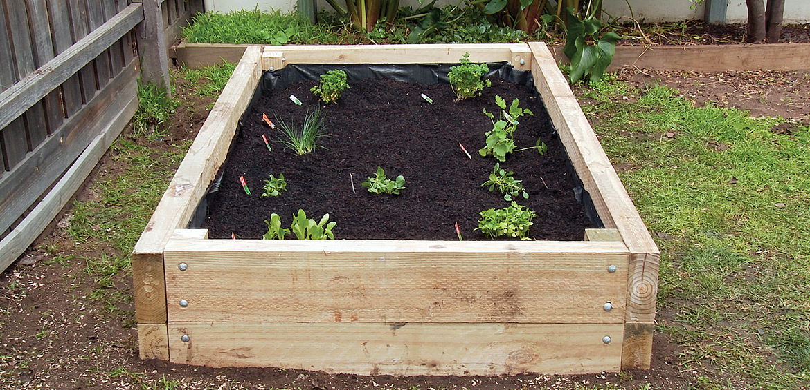

|
|
| Services |
| Our Products |
| Order |
| About Us |
Our Gardeining Blog
Our Posts
How to build a Garden BoxOur top 3 Tips and Tricks for the Garden!
How to build a Garden Box [11/3/18]
STEP 1 Find a flat patch of dirt that gets plenty of sunshine. If the ground isn't flat, dig to level. The ideal size bed is 1200mm wide, 2400mm long and 400mm (or two sleepers) high; using 200mm x 50mm x 2400mm treated pine sleepers, which are ideal as they are resistant to rotting. Check your local Home Timber and Hardware for availability and alternative options.
STEP 2 Be sure to wear safety goggles, dust mask, gloves and hearing protection. Measure 400mm and cut 4 corner posts using the 90 x 90mm treated pine posts. Measure 1200mm and cut the sleepers for the short ends of the bed to size. Every sleeper needs two bolts to secure it to each corner post. Mark and drill your screw holes. Attach them to the corner posts using 175 millimetre galvanised coach bolts and washers. Hammer the bolts through the hole, add a washer, then fasten with the nut. Using the same technique attach the long sleepers to the two end sections.
STEP 3 Use a heavy duty stapler, or a hammer and carpet tacks, to attach the weed mat to the top sleeper on one of the long sides. Unroll the mat to the other side, making sure it’s pressed up tight against the bottom corners, and staple into the opposing sleeper side. Overlap the rolls of weed matting by 100mm. Do the same from the short sides to ensure total weed cover.
Add a well-draining garden soil, and mix with organic
animal manure and homemade compost. Fill the garden
bed to around 30mm from the top. Now you can enjoy
growing fabulous fresh vegetables.
 For a more detailed guide go here!
Top 3 Tips and Tricks for the Garden! [13/3/18]
Number 3: Water First!
It’s a great idea to water your garden thoroughly before you put your mulch down. This wets the soil and the mulch keeps the moisture in. The best mulches are those with a variety of large and small particles, as this allows the oxygen and moisture to penetrate through to the plants’ roots. Even-sized mulches tend to compact and prevent oxygen and moisture penetrating the soil.
Number 2:Compact manure From personal experience, I have learnt not to use cow manure as mulch. The particles are small and they compact, making the manure water-resistant. Yes, water-resistant! So you end up with even drier soil.
Number 4: Heaps of spuds If you want to grow potatoes and don’t have a lot of room, get some chicken wire, make a big circle and use tomato stakes to secure it to the ground. Cover the seed potatoes with a mix of straw, old manure, blood and bone and compost, then water. As they grow, continue mounding the straw mix on top. Potatoes take about 14–16 weeks to harvest and are ready when the plants begin to yellow and die back.
To Stay Up to date with our Gardening Blog:
Cart:
Tofu: $9.99
|
Eggplant $4.99
|
Shirt $30.00
|
Price: $45.00 |
Shipping: +$4.99 |
Total Price: $50.00 |
| Order Now! |